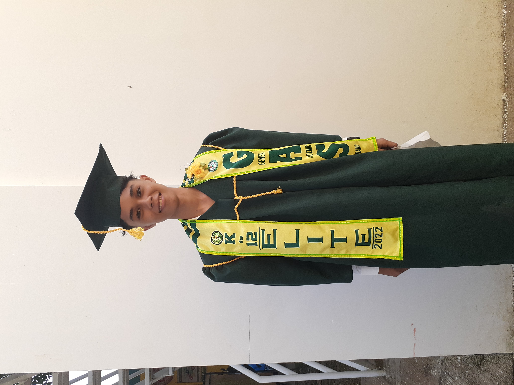
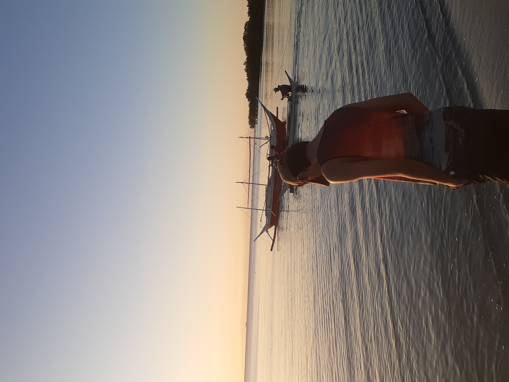
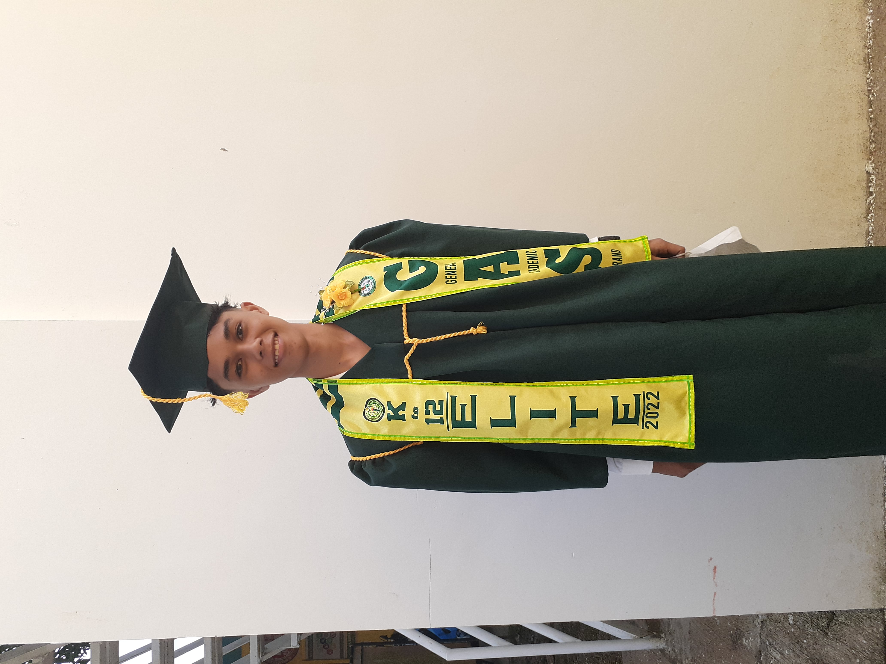
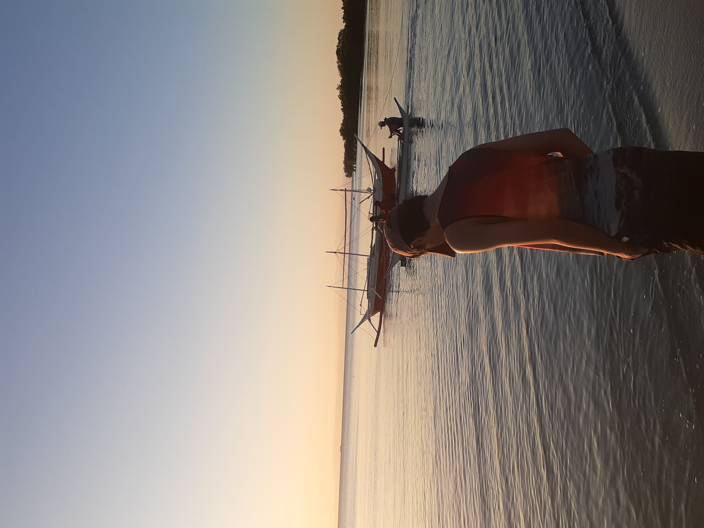
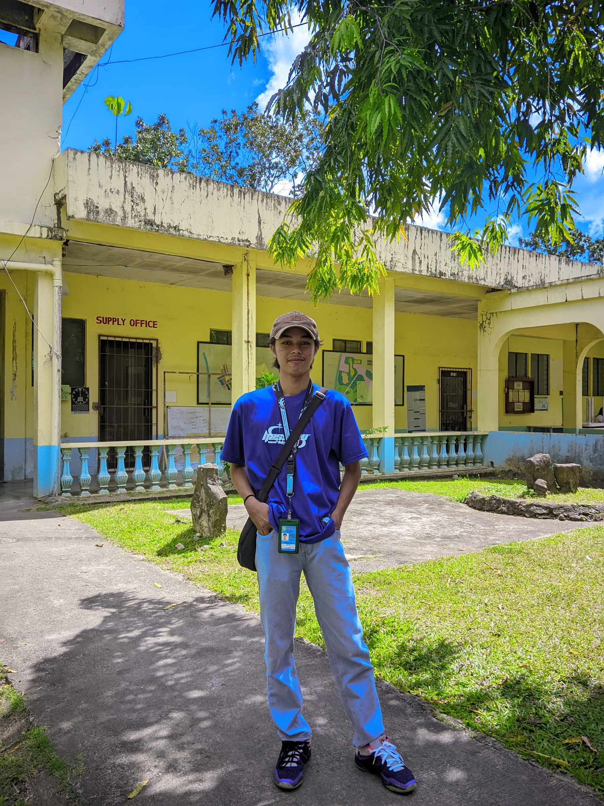
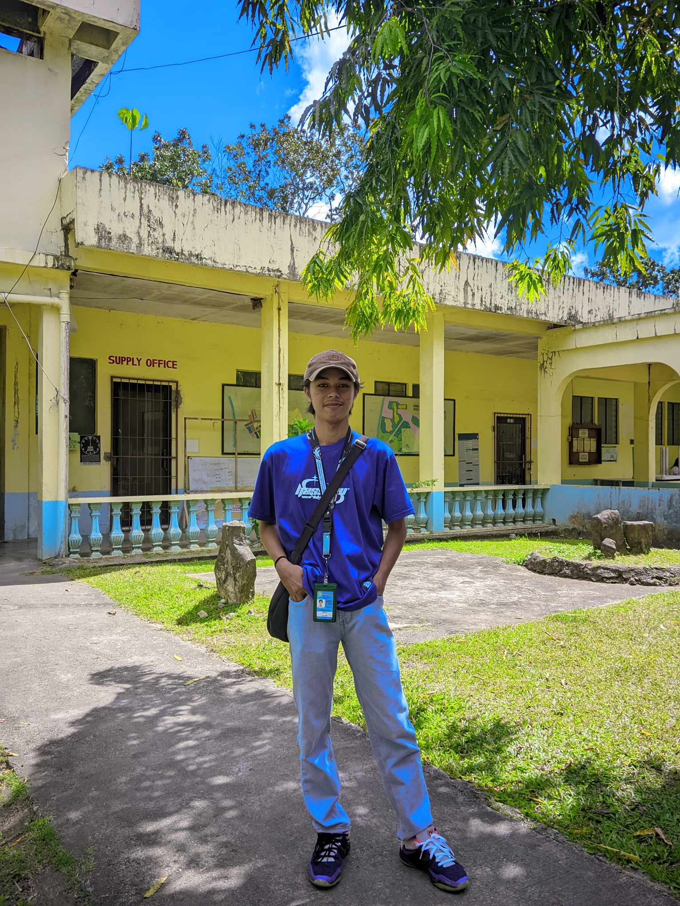

About Me
My name is Clarence T. Agnote and I'm 19years of existance. I was born on March 29, 2004, I'm from Panique, Odiongan, Romblon. I'm a 2ndYear college student that took Bachelor of Science and Information Technology(BSIT) at Romblon State University(RSU). Consistency is the superpower that turns average into extraordinary. It's the foundation of success and the key to unlocking your potential. Keep showing up, keep pushing forward, and watch your dreams become reality. I love the sea waves and the sand. the sun seems always be shining. The air smells like salt and sand. The sky looks so pretty over the ocean especially during sunrise and sunsets. This place gives me mixed feelings when there, the seashore sunset is my most favorite place in nature because of it's beautiful colors, peaceful and relaxing mood, and as it reminds me of what I am thankful for in life. The ocean so inconspicuous sparkles vitally looking over against the seashore.
No one knows what await us around the corner, so stop planning life and start living it.
 





 
